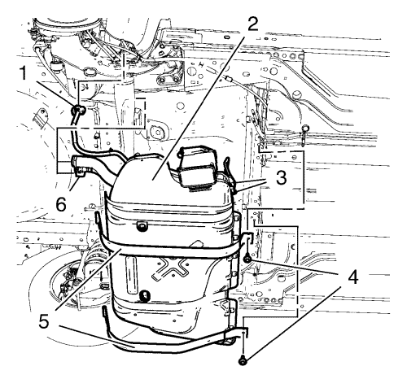

Sustitución del depósito de combustible — 1.6L LDE, LXV y 1.8L 2H0
Herramientas especiales
| • | EN-6015 Tapón de cierre |
Si desea informarse sobre herramientas regionales equivalentes, consultar Herramientas especiales .
Procedimiento de desmontaje
- Abra el capó.
- Desconecte el cable negativo de la batería. Consultar Desconexión y conexión del cable negativo de la batería → sin sistema de arranque/parada .
- Vacíe el depósito de combustible. Consultar Drenaje del depósito de combustible .
- Desmonte el conjunto de llanta y neumático trasero derecho. Consultar Desmontaje y montaje de la rueda y el neumático .
- Elevar el vehículo y soportarlo de manera segura. Consultar Elevación y soporte en alto del vehículo .
- Monte el panel de revestimiento del pasarruedas trasero. Consultar Sustitución del forro de la caja de ruedas trasera .

- Desconecte el conector (1) en línea del mazo de cables del depósito de combustible.

- Desacople el conector de la tubería de alimentación del depósito de combustible (1) de la tubería de alimentación de combustible (3). Consultar Servicio del adaptador de conexión rápida del collarín plástico .
- Tape el tubo de alimentación de combustible y el tubo de alimentación del depósito de combustible con tapones CH-807.
- Abra el clip del tubo de combustible (3).

- Desenchufe el conector del tubo de ventilación del combustible del depósito de emisión de vapor (1) del tubo de ventilación del depósito de combustible (3). Consultar Servicio del adaptador de conexión rápida del collarín plástico .
- Tape el tubo de ventilación del depósito de combustible y el tubo de ventilación del combustible del depósito de emisiones con tapones CH-807.

Advertencia: No respire el aire procedente de los tubos o mangueras de los componentes del EVAP. Los vapores de combustible existentes en el interior de los componentes del EVAP podría ocasionar lesiones físicas.
- Afloje y retire la abrazadera de fijación (2).
- Desmonte el tubo flexible de llenado del depósito de combustible (3) del tubo de llenado del depósito de combustible (1).
- Desacople el conector del tubo de ventilación de la boca del depósito de combustible (6).
- Monte el tapón EN-6015 en el tubo de ventilación de llenado del depósito de combustible.
Advertencia: Para evitar sufrir lesiones físicas, utilice siempre caballetes elevadores al trabajar en o bajo un vehículo apoyado únicamente en un gato.
Atención: Al elevar o izar un vehículo por los rieles laterales del bastidor u otros puntos de elevación recomendados, asegúrese de que las almohadillas de elevación no entran en contacto con el catalizador, las tuberías del freno o de combustible. Si tal contacto ocurriera, podría ocasionar daños en el vehículo o un funcionamiento insatisfactorio del mismo.
- Coloque un gato regulable adecuado debajo del depósito de combustible.
- Desmonte los 2 tornillos de abrazadera del depósito de combustible (4).
- Desmonte las 2 abrazaderas del depósito de combustible (5).
Nota: Es necesario un segundo técnico.
Nota: Recoja el gato.
- Desmonte el depósito de combustible.
Procedimiento de desmontaje
- Desmonte el módulo de la bomba de combustible del depósito de combustible. Consultar Sustitución del módulo de la bomba del combustible del depósito de combustible → 1.6L LDE, LXV y 1.8L 2H0 .

Advertencia: Cuando manipule combustible, lleve siempre gafas protectoras para proteger sus ojos de posibles salpicaduras.
- Desconecte el tubo de ventilación del depósito de combustible (2).
- Desconecte el enchufe del mazo de cables del depósito antiimpurezas de emisión de vapores.
- Desconecte el tubo de purga anti-impurezas de emisión de vapores (4).
- Desmonte el depósito antiimpurezas de emisión de vapores (1) del soporte del depósito antiimpurezas de emisión de vapores (3).
Procedimiento de montaje
- Monte el depósito antiimpurezas de emisión de vapores (1) en el soporte del depósito antiimpurezas de emisión de vapores (3).
- Conecte el tubo de purga anti-impurezas de emisión de vapores (4).
- Conecte el enchufe del mazo de cables del depósito antiimpurezas de emisión de vapores.
- Monte el tubo de ventilación del depósito de combustible (2).
- Monte el módulo de la bomba de combustible del depósito de combustible. Consultar Sustitución del módulo de la bomba del combustible del depósito de combustible → 1.6L LDE, LXV y 1.8L 2H0 .
Procedimiento de montaje
Nota: Es necesario un segundo técnico.
Nota: Extienda el gato.
- Monte el depósito de combustible.
- Monte las 2 abrazaderas del depósito de combustible (5).
Precaución:Consulte Precaución con las fijaciones en la sección Prólogo.
- Monte los 2 tornillos de abrazadera del depósito de combustible (4) y apriételos ab20 N·m (15 lib. pie).
- Retire el tapón EN-6015 del tubo de ventilación de llenado del depósito de combustible.
- Acople el conector del tubo de ventilación de la boca del depósito de combustible (6).
- Retire los tapones CH-807 del tubo del depósito de alimentación de combustible y del tubo de alimentación de combustible.
- Acople el conector de la tubería de alimentación del depósito de combustible (1) a la tubería de alimentación de combustible (3). Consultar Servicio del adaptador de conexión rápida del collarín plástico .
- Retire los tapones CH-807 del tubo de ventilación del combustible del depósito de emisiones y del tubo de ventilación del depósito de combustible.
- Acople el tubo de ventilación del combustible del depósito de emisiones (1) al tubo de ventilación del depósito de combustible (3). Consultar Servicio del adaptador de conexión rápida del collarín plástico .
- Cierre el clip del tubo de combustible (2).
- Monte la abrazadera de fijación (2) en el tubo flexible de llenado del depósito de combustible (3).
- Monte el tubo flexible de llenado del depósito de combustible (3) en el tubo de llenado del depósito de combustible (1).
- Bajar el vehículo.
- Emborne el conector en línea del mazo de cables del depósito de combustible (1).
- Monte el panel de revestimiento del pasarruedas trasero. Consultar Sustitución del forro de la caja de ruedas trasera .
- Bajar el vehículo.
- Monte el conjunto de llanta y neumático trasero derecho. Consultar Desmontaje y montaje de la rueda y el neumático .
- Conecte el cable negativo de la batería. Consultar Desconexión y conexión del cable negativo de la batería → sin sistema de arranque/parada .
- Cierre el capó.
| © Copyright Chevrolet. All rights reserved |